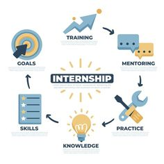
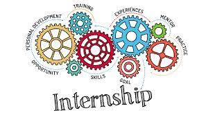

In today's competitive world, the most significant issue freshers face when searching for a job is work
experience. Every employer is looking for the best competitor with work experience. Holding a degree is
not sufficient for a student to secure a job they wish. They need practical experience, and here
internship plays a relevant role.

A fresher may hold a high rank and may be efficient in theories, but it does not mean that he is
efficient for the job. Only practical experience can owe such experience through projects and real-time
environment. Internships allow each student to get the opportunities for students to apply their
theoretical knowledge they have learned.An internship is a right way to meet the needs of the employer
and academic learning. Whether it's an entry-level position or a prominent position, an internship is
always a boon to students, and should try to gain knowledge and experience as much as they can.

They can explain all the tasks and projects they have completed during the time of the internship and
can perform well in interview calls. Most of the time, part for a fresher is to get interview calls. An
experienced resume is much more desirable than that of fresher's resume in the hand of an employer.
Corporates need employees who are aware of the work and the company's culture, giving more preference to
the interns instead of hiring a fresh candidate.When fresher works as an intern for a company, they gain
experience.
During the internship, the training period helps them learn from their mistakes, and they get better
guidance from their mentors to correct them. Learn from the mistakes and polish your skills, which make
themselves perfect for a full-time job role. It lets them find out their weakness, strength, agility for
Ideas to perform well in their position.